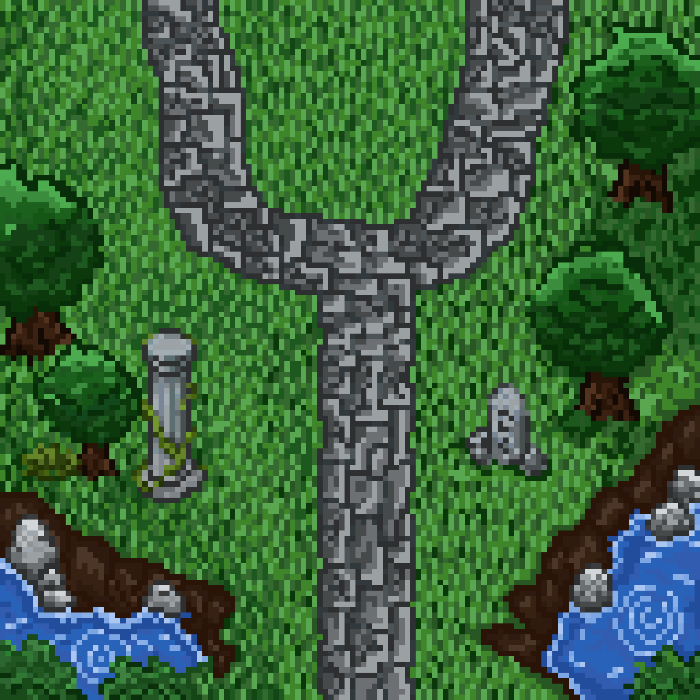
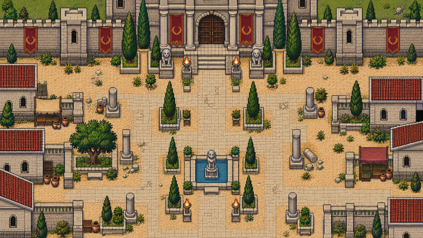
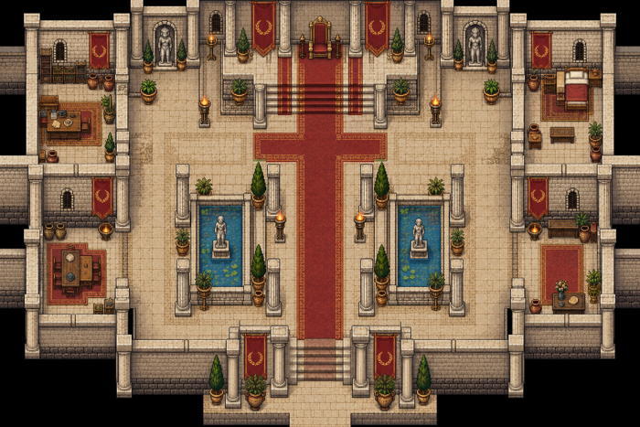

01. Organizar o percurso
O projeto separa a experiência em cenários, incluindo a estrada, a entrada de Tebas, a cidade e o palácio. Essa organização distribui encontros e acontecimentos ao longo do caminho.
Uma tragédia clássica, um mundo para investigar. Um jogo inspirado em Édipo Rei, de Sófocles, desenvolvido no Construct 3.

Conheci a história de Édipo Rei em uma aula de Ética. A trama me chamou a atenção e comecei a imaginar como aquele conto grego poderia virar um jogo: um espaço para explorar, conversar com os personagens e acompanhar a investigação de Édipo.
A investigação é o fio condutor: o jogador acompanha Édipo em uma história marcada por perguntas, revelações e consequências. O projeto conecta construção de mapas, personagens, diálogos e lógica de progressão.
O projeto separa a experiência em cenários, incluindo a estrada, a entrada de Tebas, a cidade e o palácio. Essa organização distribui encontros e acontecimentos ao longo do caminho.
Édipo, Jocasta, Creonte, Tirésias e outros personagens participam da história. As conversas são organizadas em eventos no Construct 3, conectando texto e ações.
O sistema de diálogos inclui respostas e condições. Variáveis de história registram acontecimentos para que os encontros possam responder ao progresso do jogador.
Os cenários em pixel art e a fonte Pedro Hand aproximam arte e narrativa. A própria caligrafia de Pedro passa a fazer parte da experiência.


O encontro com a Esfinge integra os diálogos e a progressão. Seu estado é registrado no projeto para que o avanço da história considere esse acontecimento.
As conversas em torno de Édipo constroem a busca pela verdade. A estrutura precisa manter o contexto entre personagens, cenas e revelações.
Minha maior dificuldade foi aprender por conta própria a usar o Construct 3. Ao mesmo tempo, precisei pesquisar Édipo Rei, compreender melhor a narrativa e decidir como transformar seus acontecimentos em uma experiência de jogo.
O processo envolveu experimentar a ferramenta, testar a programação em blocos e voltar à pesquisa para conectar as cenas. Usei o ChatGPT como apoio na programação em blocos do Construct 3.
Um desafio central dessa estrutura é conectar movimentação, interação e narrativa sem perder a sequência dos acontecimentos. O projeto organiza esses sistemas em folhas de eventos separadas e utiliza variáveis para acompanhar a história.
Outro ponto é manter uma apresentação consistente entre cenários e conversas. A fonte autoral e os elementos de diálogo compartilhados ajudam a conectar visualmente a experiência.
Pedro Henrique Santos Garcia: concepção do jogo, pesquisa da história e desenvolvimento no Construct 3.
Maria: criação dos mapas em pixel art 2D, desenhados pixel por pixel. Maria é minha amiga e colaborou com a parte visual dos cenários.
ChatGPT: auxílio na programação em blocos do Construct 3.
O material reúne cenários, personagens, diálogos e lógica de jogo em um projeto do Construct 3. É uma aplicação concreta de narrativa, design e programação visual.
A versão jogável, as capturas de gameplay e o vídeo de demonstração ainda serão adicionados a esta página.